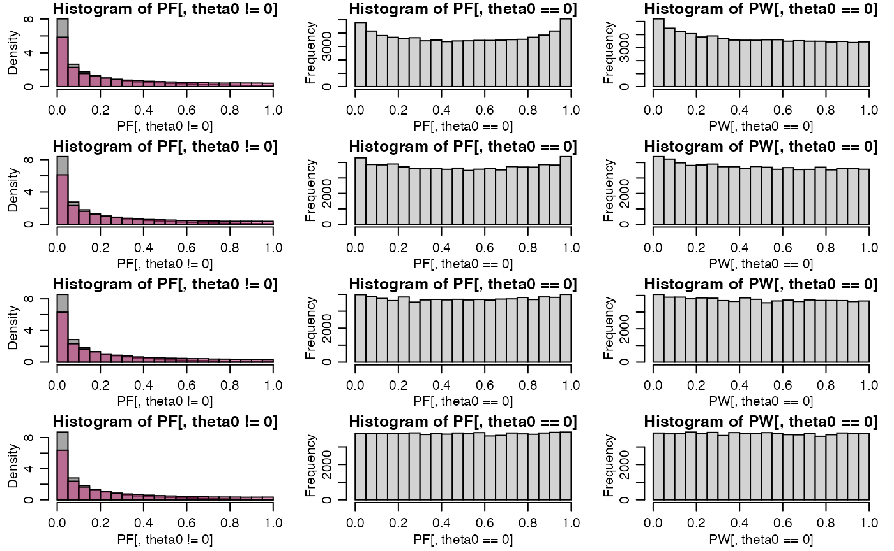
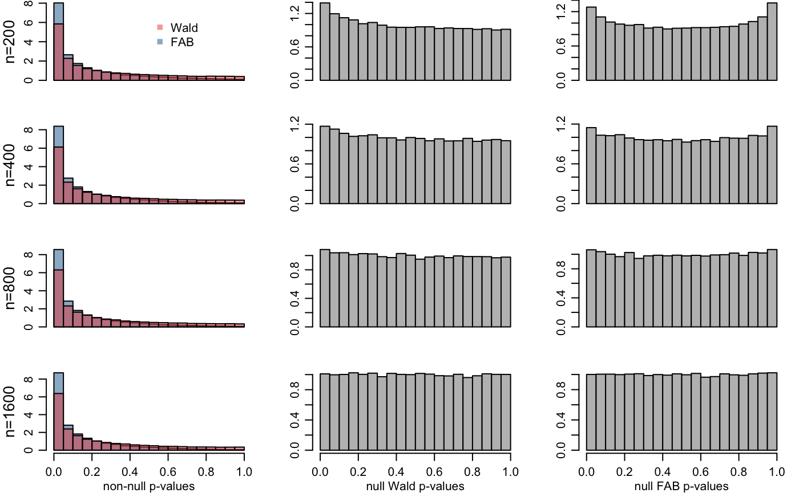

\(p\)-values" />
exampleLogistic.RmdThis is a simulation study in which adaptive FAB \(p\)-values are constructed for logistic regression coefficients. This document serves as the replication code for the example in Section 4.3 of the article “Smaller \(p\)-values via indirect information” (Hoff 2019).
The linking model we consider here is that the logistic regression coefficients \(\theta_1,\ldots, \theta_p\) are i.i.d. from a mixture of a point-mass distribution at zero and a normal distribution with some mean and variance.
Here is a function that estimates the parameters in the linking model. More generally, it obtains MLEs of \(\mu\) and \(\tau^2\) under the model \[ \begin{align*} y & \sim N_p( \theta , \sigma^2 I) \\ \theta_1,\ldots, \theta_p &\sim i.i.d\ (1-\pi) \delta_0(\theta) + \text{dnorm}(\theta, \mu,\tau) \end{align*} \]
fitMM<-function(y,s2){
obj<-function(gam){
pi<-gam[1] ; mu<-gam[2] ; t2<-gam[3]
-sum( log( pi*dnorm(y,mu,sqrt(t2+s2)) + (1-pi)*dnorm(y,0,sqrt(s2))) )
}
mut2<-optim( c(.9,mean(y),var(y)),obj,method="L-BFGS-B",
lower=c(.001,-Inf,.001),upper=c(.999,Inf,Inf))$par[2:3]
names(mut2)<-c("mu","t2")
mut2
}For this example, for each \(\theta_j\) we will plug-in an estimate \(\hat\theta_{-j}\) of the vector \(\theta_{-j}\) using data that is independent (asymptotically) of \(\hat\theta_j\).
Here is the simulation:
set.seed(1)
p<-30
theta0<-rep(c(3,0),times=c(p/2,p/2))
nvals<-c(200,400,800,1600)
nsim<-5000
PVALS<-array(dim=c(nsim,p,2,length(nvals)))
par(mfrow=c(4,3),mar=c(3,3,1,1),mgp=c(1.75,.75,0))
for(k in 1:length(nvals)){
n<-nvals[k]
PF<-PW<-NULL
for(s in 1:nsim){
X<-matrix(rnorm(n*p),n,p)
lp<-X%*%theta0/sqrt(n)
y<-rbinom(n,1,1/(1+exp(-lp)))
fit<-glm(y~-1+X,family="binomial")
theta<-fit$coef
Sigma<-summary(fit)$cov.scaled
s2<-diag(Sigma)
MUT2<-NULL
for(j in 1:p){
G<-MASS::Null(Sigma[,j])
MUT2<-rbind(MUT2,fitMM( (G%*%(t(G)%*%theta))[-j],s2[-j]) )
}
z<-theta/sqrt(s2)
pW<-1-abs( pnorm(z)-pnorm(-z))
pF<-1-abs( pnorm(z+2*sqrt(s2)*MUT2[,1]/MUT2[,2]) - pnorm(-z) )
PF<-rbind(PF,pF) ; PW<-rbind(PW,pW)
}
PVALS[,,1,k]<-PW
PVALS[,,2,k]<-PF
hist(PF[,theta0!=0],col=rgb(.3,.3,.3,.5),prob=TRUE)
hist(PW[,theta0!=0],col=rgb(.8,.2,.5,.5),add=TRUE,prob=TRUE)
hist(PF[,theta0==0])
hist(PW[,theta0==0])
}
Here we save the results:
dimnames(PVALS)[[3]]<-c("pW","pF")
dimnames(PVALS)[[4]]<-nvals
resultsLogistic <-PVALS
save(resultsLogistic,file="resultsLogistic.RData") The results are in \(30\times 5000 \times 2 \times 4\) array. The first dimension corresponds to the regression coefficients, the first 15 of which were \(3/\sqrt{n}\) and the last 15 of which were zero. The second dimension corresponds to the simulation number (1 to 5000). The third dimension is the \(p\)-value type, and the fourth dimension is the sample size.
Here are the plots from the article:
PVALS<-resultsLogistic
p<-dim(PVALS)[2]
theta0<-rep(c(3,0),times=c(p/2,p/2))
par(mfrow=c(4,3),mar=c(2.75,3.2,0,1),mgp=c(1.75,.75,0))
for(k in 1:dim(PVALS)[4]){
PW<-PVALS[,,1,k]
PF<-PVALS[,,2,k]
xlab<-1*(k==dim(PVALS)[4]) + 1
hist(PF[,theta0!=0],col=rgb(.1,.4,.6,.5),prob=TRUE,main="",
xlab=c("","non-null p-values")[xlab],ylab="",xaxt=c("n","s")[xlab] )
hist(PW[,theta0!=0],col=rgb(.9,.3,.3,.5),prob=TRUE,add=TRUE)
mtext(paste0("n=",dimnames(PVALS)[[4]][k]),2,line=2,cex=.85)
if(k==1){
legend(.5,7,legend=c("Wald","FAB"),pch=15,col=c(rgb(.9,.3,.3,.5),rgb(.1,.4,.6,.5)),bty="n")
}
hist(PW[,theta0==0],prob=TRUE,col="gray",main="",
xlab=c("","null Wald p-values")[xlab],ylab="",xaxt=c("n","s")[xlab])
hist(PF[,theta0==0],prob=TRUE,col="gray",main="",
xlab=c("","null FAB p-values")[xlab],ylab="",xaxt=c("n","s")[xlab])
}
sigNN<-apply(PVALS[,theta0!=0,,]<.05,c(3,4),mean)
sigTN<-apply(PVALS[,theta0==0,,]<.05,c(3,4),mean)
sigNN## 200 400 800 1600
## pW 0.2923733 0.3062933 0.3154933 0.3189067
## pF 0.4010933 0.4189067 0.4282800 0.4353733sigTN## 200 400 800 1600
## pW 0.06944000 0.05845333 0.05421333 0.05048
## pF 0.06394667 0.05730667 0.05309333 0.05004